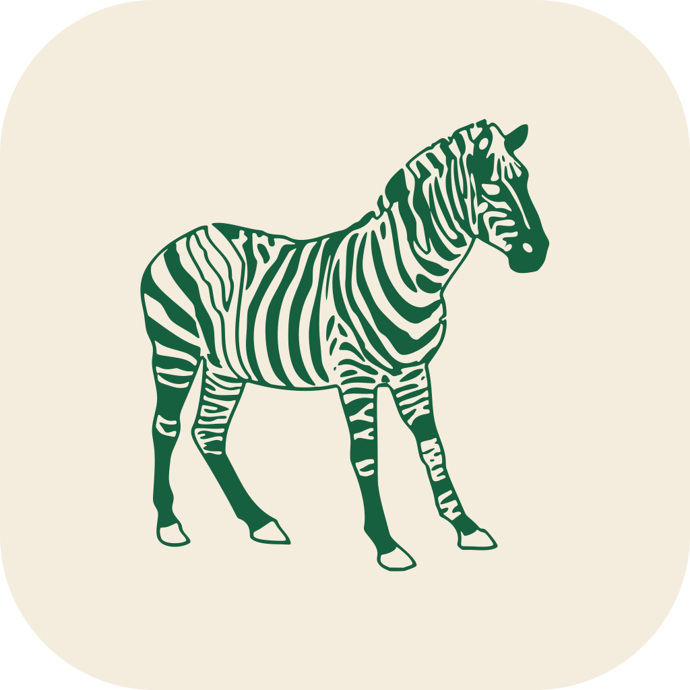

Öffne die Beamer-Ansicht im Vollbild auf dem Projektor und die Lehrer:innen-Ansicht auf deinem Laptop. Beide Fenster synchronisieren sich automatisch.
Für die Klasse. Spielfeld, Punkte, Frage — ohne Lösung. Öffnet als eigenes Fenster.
Steuerung, Aufgabenverwaltung und die Lösung.